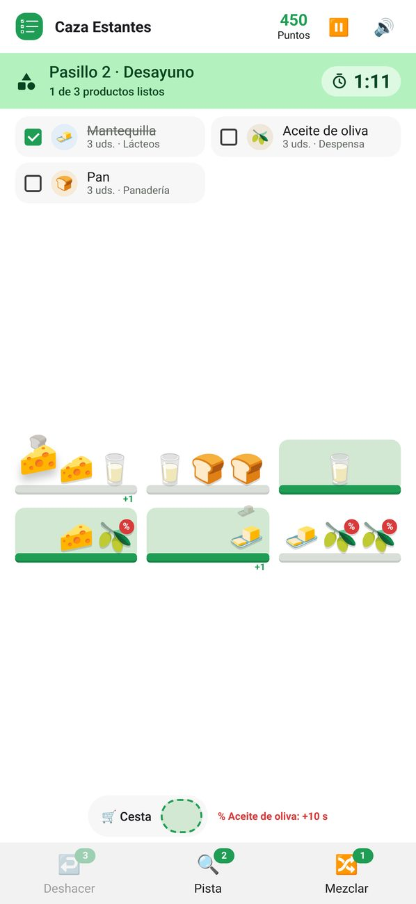

Cada pasillo trae una lista de la compra. Toca un producto y luego un estante con hueco libre. Junta tres productos iguales en un estante para vaciarlo y la fila de atrás avanzará. Tacha todo lo de tu lista antes de que se acabe el tiempo y llévate tu ticket.
Descargar gratis en el App Store

Descargar gratis en el App Store
¿Caza Estantes es gratis?
Sí. El juego se descarga y se juega gratis. Hay compras opcionales dentro de la app (un pack de ayudas y Premium) y anuncios con recompensa opcionales; no hace falta nada de eso para terminar los pasillos.
¿Funciona sin conexión?
Sí. Puedes jugar sin internet y sin crear una cuenta.
¿En qué dispositivos funciona?
En iPhone, desde el App Store.
Consejos de Shelf Hunter: 9 formas de terminar cada pasillo con 3 estrellas
Dudas o problemas: oguz.kamburoglu@gmail.com
Política de privacidad (en turco)
Türkçe · English · Deutsch · Español · Français · Português · Русский